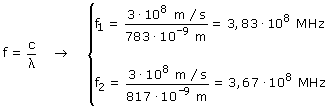
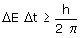
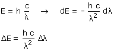
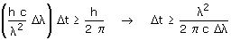
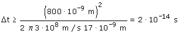

|
Normalmente se dice que la luz láser es monocromática (Una única longitud de onda) pero el hecho de que se emita por pulsos de corta duración hace que la luz tenga una banda de longitudes de onda, es decir que se indetermine la longitud de onda  Una fluctuación en la longitud de onda de 783 a 817 nm equivale a una fluctuación en frecuencia de 3,67·108 a 3,83·108 MHz Relación de Heisemberg:  Una imprecisión en la energía implica una imprecisión
en la longitud de onda (E = h·c/λ)  Al pasar de diferencial a indeterminación se ha quitado el signo menos porque lo que cuenta es la cantidad de indeterminación no su sentido (El signo menos indica que un aumento en la longitud de onda produce una disminución en la energía) Sustituyendo en la relación de Heisemberg:  Si la longitud de onda fluctúa entre 783 y 817 nm podemos expresarla como: λ = (800 ± 17) nm El pulso del láser tiene una longitud de onda de 800 nm con una indeterminación de 17 nm  Como poco el pulso de láser tiene que durar 2·10-14 s |